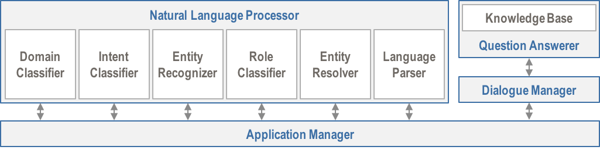
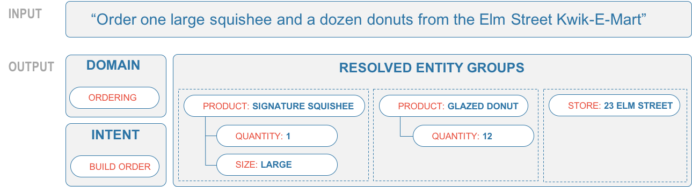

Platform Architecture
Title goes here
Title goes here
Title goes here
Title goes here
Title goes here
The MindMeld Conversational AI Platform provides a robust end-to-end pipeline for building and deploying intelligent data-driven conversational apps. The high-level architecture of the platform is illustrated below.
Note
The Application Manager, while part of Workbench, orchestrates behind the scenes and never needs developer attention.
We will now explore the platform component by component.
Natural Language Processor
The Natural Language Processor (NLP) understands the user’s query — that is, it produces a representation that captures all salient information in the query. This summarized representation is then used by the app to decide on a suitable action or response to satisfy the user’s goals. (Throughout this guide the terms query and natural language input are interchangeable.)
The example below shows a user query and the resulting NLP output.
The Natural Language Processor analyzes the input using a hierarchy of machine-learned classification models, as introduced in Step 7. Apart from these classifiers, the NLP also has modules for entity resolution and language parsing. Altogether, this makes six subcomponents: a four-layer classification hierarchy, plus the entity resolution and language parsing modules.
The pipeline processes the user query sequentially in the left-to-right order shown in the architecture diagram above. In doing this, the NLP applies a combination of techniques such as pattern matching, text classification, information extraction, and parsing.
Next, we examine the role of each step in the NLP pipeline.
Domain Classifier
| Intent | Description |
|---|---|
| search_restaurant | Searching for restaurants matching a particular set of criteria |
| get_restaurant_info | Get information about a selected restaurant like hours, cuisine, price range, etc |
| browse_dish | List dishes available at a selected restaurant, filtered by given criteria |
| place_order | Place an order for pick up or delivery |
Every domain has its own separate intent classifier for categorizing the query into one of the intents defined within that domain. The app chooses the appropriate intent model at runtime, based on the predicted domain for the input query.
To learn how to train intent classification models in Workbench, see the Intent Classifier section of this guide.
Entity Recognizer
| Domain | Intent | Entity Types |
|---|---|---|
| weather | check_weather | location, day |
| movies | find_movie | movie_title, genre, cast, director, release_date, rating |
| food | search_restaurant | restaurant_name, cuisine, dish_name, location, price_range, rating |
| food | browse_dish | dish_name, category, ingredient, spice_level, price_range |
Since the set of relevant entity types might differ for each intent (even within the same domain), every intent has its own entity recognizer. Once the app establishes the domain and intent for a given query, the app then uses the appropriate entity model to detect entities in the query that are specific to the predicted intent.
To learn how to build machine-learned entity recognition models in Workbench, see the Entity Recognizer section of this guide.
Role Classifier
| Domain | Intent | Entity Type | Role Types |
|---|---|---|---|
| meeting | schedule_meeting | time | start_time, end_time |
| travel | book_flight | location | origin, destination |
| retail | search_product | price | min_price, max_price |
| banking | transfer_funds | account_num | sender, recipient |
To learn how to build role classification models in Workbench, see the Role Classifier section of this guide.